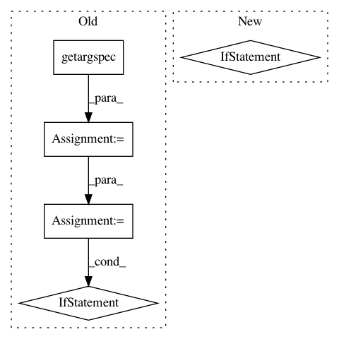

40298ad9b45f3d51e7fb4453301550d745ed98de,featuretools/primitives/base/utils.py,,inspect_function_args,#Any#Any#Any#,9
Before Change
def inspect_function_args(new_class, function, uses_calc_time):
// inspect function to see if there are keyword arguments
argspec = getargspec(function)
kwargs = {}
if argspec.defaults is not None:
lowest_kwargs_position = len(argspec.args) - len(argspec.defaults)
for i, arg in enumerate(argspec.args):
if arg == "time":
if not uses_calc_time:
raise ValueError(""time" is a restricted keyword. Please"
" use a different keyword.")
else:
new_class.uses_calc_time = True
if argspec.defaults is not None and i >= lowest_kwargs_position:
kwargs[arg] = argspec.defaults[i - lowest_kwargs_position]
return new_class, kwargs
After Change
" use a different keyword.")
else:
new_class.uses_calc_time = True
if arg.default is not arg.empty:
kwargs[arg.name] = arg.default
return new_class, kwargs
In pattern: SUPERPATTERN
Frequency: 3
Non-data size: 5
Instances
Project Name: Featuretools/featuretools
Commit Name: 40298ad9b45f3d51e7fb4453301550d745ed98de
Time: 2019-04-09
Author: inboxjeff@outlook.com
File Name: featuretools/primitives/base/utils.py
Class Name:
Method Name: inspect_function_args
Project Name: keras-team/keras
Commit Name: ced84c4b42d9186842e4cad6c11b0c8f2c18439b
Time: 2017-06-16
Author: chris.kerr@athion.de
File Name: keras/wrappers/scikit_learn.py
Class Name: BaseWrapper
Method Name: check_params
Project Name: keras-team/keras
Commit Name: 04a20177cf332004a291cee626c20a0262427796
Time: 2017-06-21
Author: chris.kerr@athion.de
File Name: keras/wrappers/scikit_learn.py
Class Name: BaseWrapper
Method Name: check_params